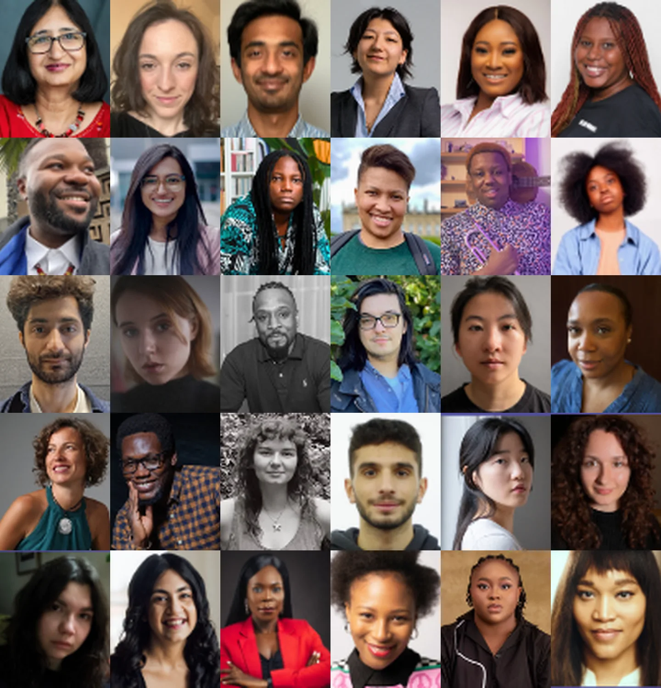
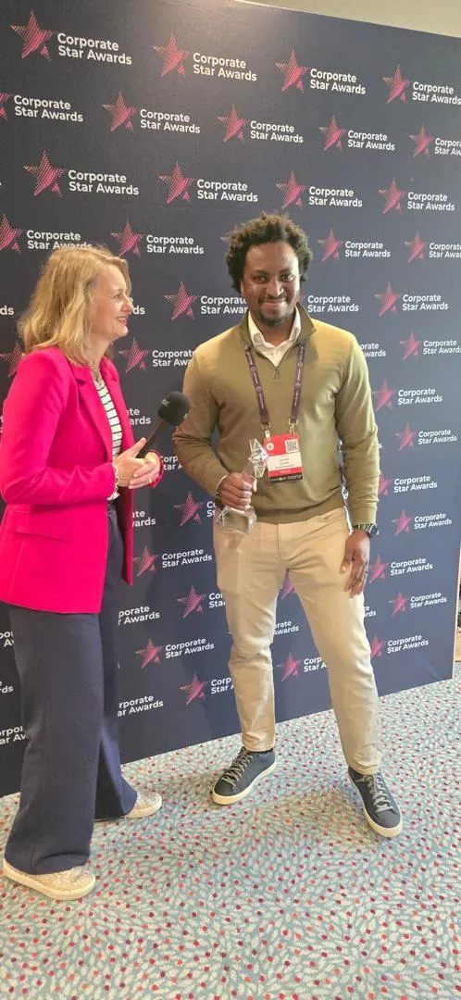
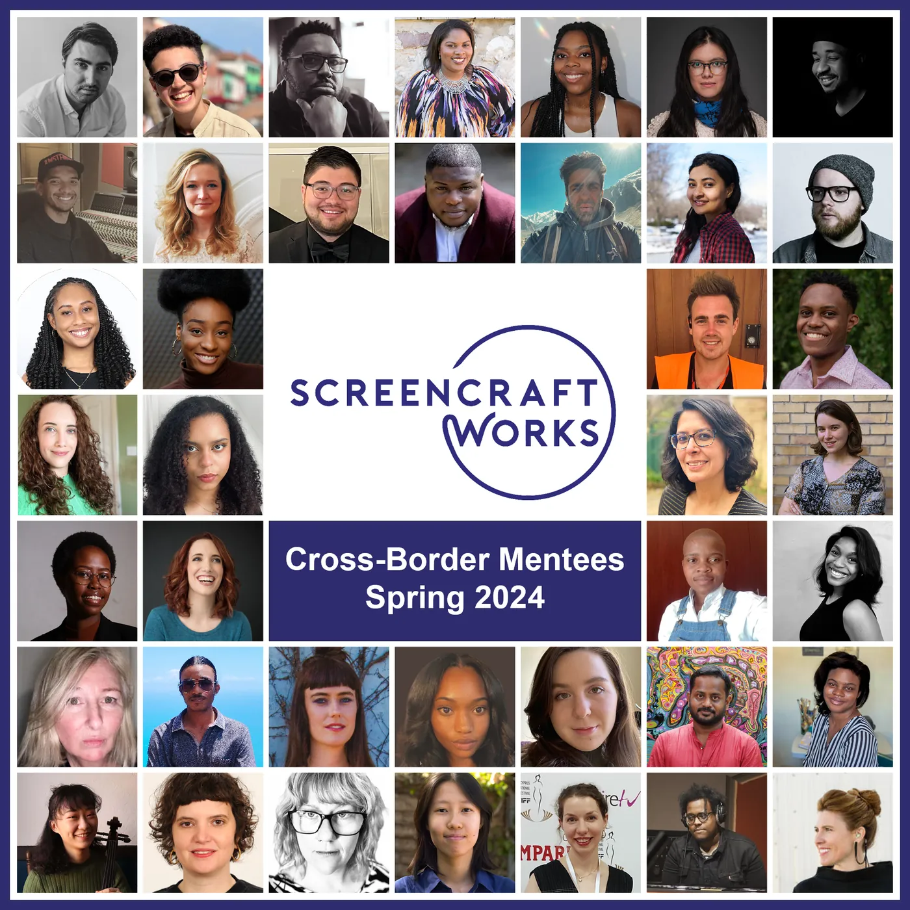
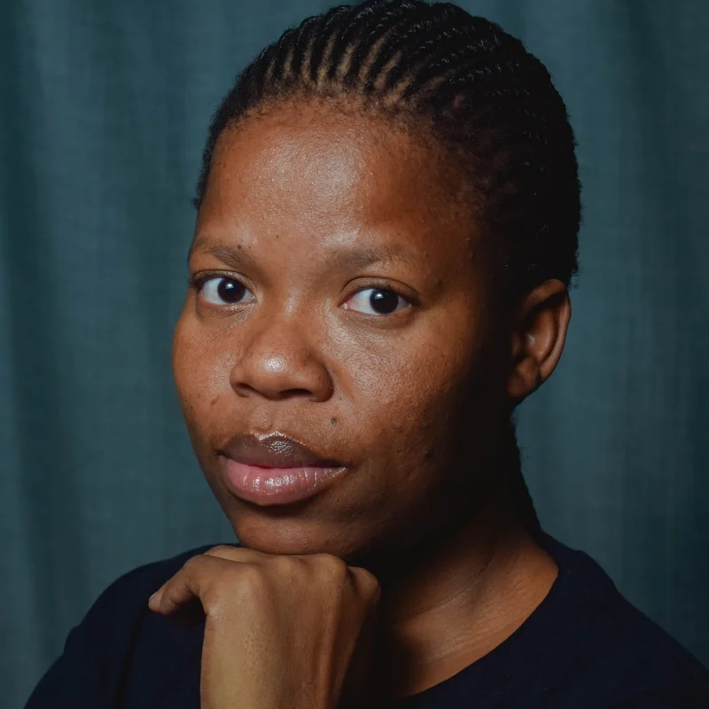

CE
Chuka Ejorh
Photo and biography to be supplied.
About the programme
The programme helps working professionals build the skills, experience, networks and industry exposure needed to operate at a higher level. It is run by Blink Studios with ScreenCraft Works.

About the programme
The Blink Cross-Border Mentoring Programme connects film and television professionals with experienced industry mentors in other countries. It combines one-to-one mentorship with practical development, industry exposure, project-based learning and professional networks.
It is built for people who already have experience in their field. Mentees come in with credits and a practice, and leave with stronger skills, a clearer direction and relationships that lead to bigger work.
Global, practical and industry-focused. The programme is designed around real professional challenges, not classroom training.
Why it exists
Professionals across Africa, the Caribbean and other regions already have talent and experience. Many lack access to the networks, practical guidance and opportunities needed to work at a higher industry level.
Cross-border mentoring closes that gap one match at a time. A producer in Lagos can learn how an international co-production is put together. An editor in Kingston can work through a cut with someone who has delivered to international distributors.

Blink Studios is a film and television production company with a presence in Nigeria, the United Kingdom and the United States.
Its role in the programme: Blink provides the operational and production infrastructure that takes the programme from a community initiative to a more structured, scalable talent-development programme.
Company profile, production credits and leadership biography to be supplied by Blink Studios.
About ScreenCraft Works
ScreenCraft Works was founded in 2022 as an international community focused on cross-border mentoring, talks and networking for under-represented production and post-production talent in film and television.
Programmes

The team
The team that runs the programme day to day, from matching mentors and mentees to running sessions and events.
Photo and biography to be supplied.

Lesedi Mphothwe is an award-winning, Botswana-based Film and Television Practitioner driven by a passion for impactful storytelling. She is the dynamic Festival Director of the Pan African Bantu Film Festival, where she drives strategic partnerships and curates captivating programming.
Lesedi holds a Bachelor of Arts (Honours) in Motion Picture Medium, an Associate Degree in Broadcasting, and specialised training in Impact Producing. Her track record includes producing hit drama series for Botswood Studios (Botshelo Jo S5) and New Look Studios (Lights Off), as well as award-winning short films such as Cell 10 and Finding Her Song, and the documentary Testimony.
An active member of the Global Impact Producers Alliance (GIPA) and the Women in Film Guild Botswana, Lesedi has served as a juror for international events, including the Mpumalanga International Film Festival and the U.S. Documentary Residency in Botswana. She has completed professional development through the Botswana Ignite Film & Television Industry Development Programme, the New York Film Academy’s Nonfiction Storytelling Programme, and a general course in Intellectual Property.
She currently serves as Programme Lead for the Blink Cross-Border Mentoring Programme, which strengthens industry expertise, expands professional opportunities, and prepares creative talent for global-scale productions.
Photo: ASVisuals
Photo and biography to be supplied.